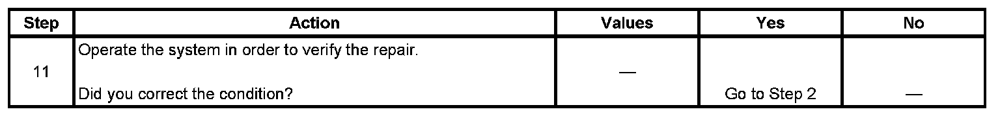

Global Positioning System (GPS) Data Not Current or Inaccurate
GLOBAL POSITIONING SYSTEM (GPS) DATA NOT CURRENT OR INACCURATE
DIAGNOSTIC AIDS
- The Global Positioning System (GPS) Signal title on the scan tool will display a Yes or No dependant upon whether or not the module sees an increment of the seconds transmitted by GPS signals to the vehicle communication interface module. Upon entering this screen, the GPS Signal title will automatically display Yes, regardless of the presence of time increment, for at least 2 seconds, while the algorithm in the scan tool determines the status of the clock. If increment is found, Yes is continually displayed. If the clock remains static, No is displayed. The scan tool looks for increment every second, regardless of current display.
- Inaccurate or aged GPS position concerns which are no longer present may have been due to the temporary loss of GPS signal reception by the vehicle. Conditions such as driving through tunnels or parking structures while making an OnStar(R) keypress will restrict the navigation antenna from a clear view of the satellites in the sky and may have caused this temporary data loss.
TEST
Step 1 - Step 10:

Step 11:
